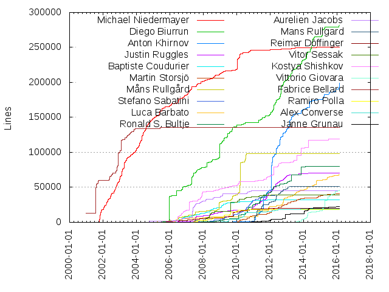
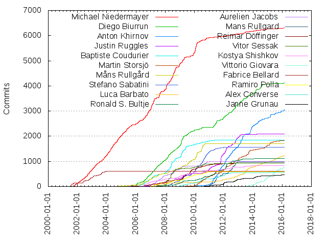

Authors
| Author | Commits (%) | + lines | - lines | First commit | Last commit | Age | Active days | # by commits |
|---|
| Michael Niedermayer | 6301 (14.68%) | 250425 | 133006 | 2001-10-11 | 2016-02-09 | 5233 days, 22:50:04 | 2013 | 1 |
| Diego Biurrun | 4141 (9.65%) | 282156 | 312975 | 2004-08-19 | 2016-02-25 | 4206 days, 20:11:46 | 1361 | 2 |
| Anton Khirnov | 3063 (7.14%) | 199467 | 170135 | 2008-05-22 | 2016-02-25 | 2834 days, 15:52:56 | 798 | 3 |
| Justin Ruggles | 2088 (4.86%) | 70214 | 39698 | 2005-05-05 | 2014-07-18 | 3361 days, 7:28:09 | 546 | 4 |
| Baptiste Coudurier | 1853 (4.32%) | 32319 | 20290 | 2006-01-22 | 2012-03-21 | 2249 days, 15:38:08 | 516 | 5 |
| Martin Storsjö | 1828 (4.26%) | 41031 | 18101 | 2006-12-08 | 2016-01-22 | 3331 days, 19:26:29 | 687 | 6 |
| Måns Rullgård | 1706 (3.97%) | 98588 | 55649 | 2002-10-06 | 2011-08-01 | 3220 days, 18:14:58 | 530 | 7 |
| Stefano Sabatini | 1567 (3.65%) | 39075 | 21775 | 2007-04-25 | 2015-11-03 | 3114 days, 7:24:38 | 554 | 8 |
| Luca Barbato | 1231 (2.87%) | 67845 | 46634 | 2000-12-31 | 2016-02-24 | 5532 days, 14:05:38 | 655 | 9 |
| Ronald S. Bultje | 1112 (2.59%) | 79693 | 46250 | 2004-03-13 | 2014-07-17 | 3778 days, 1:45:17 | 452 | 10 |
| Aurelien Jacobs | 992 (2.31%) | 45354 | 38892 | 2003-12-12 | 2011-08-21 | 2808 days, 12:48:55 | 334 | 11 |
| Mans Rullgard | 984 (2.29%) | 50872 | 43198 | 2010-04-20 | 2013-01-23 | 1009 days, 4:15:53 | 315 | 12 |
| Reimar Döffinger | 934 (2.18%) | 20054 | 12663 | 2004-08-10 | 2014-04-03 | 3522 days, 11:35:32 | 396 | 13 |
| Vitor Sessak | 924 (2.15%) | 39351 | 16078 | 2007-05-07 | 2012-05-27 | 1847 days, 8:48:29 | 230 | 14 |
| Kostya Shishkov | 839 (1.95%) | 118750 | 20413 | 2004-11-11 | 2015-04-10 | 3801 days, 9:41:52 | 479 | 15 |
| Vittorio Giovara | 756 (1.76%) | 45896 | 23879 | 2013-01-23 | 2016-02-24 | 1127 days, 9:18:50 | 278 | 16 |
| Fabrice Bellard | 612 (1.43%) | 135747 | 68429 | 2000-12-19 | 2007-11-03 | 2509 days, 15:31:38 | 120 | 17 |
| Ramiro Polla | 584 (1.36%) | 18308 | 14903 | 2006-06-27 | 2011-03-26 | 1733 days, 16:43:26 | 266 | 18 |
| Alex Converse | 561 (1.31%) | 18934 | 9114 | 2008-09-12 | 2015-01-27 | 2328 days, 10:21:14 | 265 | 19 |
| Janne Grunau | 471 (1.10%) | 23042 | 10633 | 2007-07-06 | 2015-12-29 | 3097 days, 18:44:30 | 272 | 20 |
These didn't make it to the top: David Conrad, Loren Merritt, Carl Eugen Hoyos, Alex Beregszaszi, Mike Melanson, Luca Abeni, Peter Ross, Jason Garrett-Glaser, Panagiotis Issaris, Benjamin Larsson, Zdenek Kabelac, Benoit Fouet, Oded Shimon, Philip Gladstone, Roman Shaposhnik, Paul B Mahol, Derek Buitenhuis, Alexander Strange, Laurent Aimar, Jai Menon, François Revol, Guillaume Poirier, Robert Swain, Samuel Pitoiset, Ivan Kalvachev, Reinhard Tartler, Stefan Gehrer, Daniel Kang, Andreas Öman, Roberto Togni, Nick Kurshev, Tomas Härdin, Hendrik Leppkes, Daniel Verkamp, Tim Walker, Ivo van Poorten, Víctor Paesa, Gwenole Beauchesne, Christophe Gisquet, Juanjo, Josh Allmann, Rémi Denis-Courmont, Jeff Downs, Arpi, Marc Hoffman, John Stebbins, Diego Pettenò, Nathan Caldwell, Anssi Hannula, Andreas Cadhalpun, Aneesh Dogra, Falk Hüffner, Sascha Sommer, Michel Bardiaux, Vladimir Voroshilov, Ben Littler, Thilo Borgmann, Henrik Gramner, wm4, Nicolas George, James Almer, Clément Bœsch, Reynaldo H. Verdejo Pinochet, Diego Elio Pettenò, Alexandra Hájková, Zuxy Meng, Cédric Schieli, Joakim Plate, Ivan Schreter, Rafaël Carré, Wolfram Gloger, Dustin Brody, Maxim Poliakovski, Dave Yeo, Sean McGovern, Michael Kostylev, Mashiat Sarker Shakkhar, Eli Friedman, Ben Avison, Kieran Kunhya, Yusuke Nakamura, Kenan Gillet, Steven M. Schultz, Steve L'Homme, Piotr Bandurski, Jordi Ortiz, Zhentan Feng, Vladimir Pantelic, Tobias Bindhammer, Nidhi Makhijani, Björn Axelsson, Sebastian Vater, Jindřich Makovička, James Zern, Bobby Bingham, Nico Sabbi, Howard Chu, Christophe GISQUET, Timothy Gu, Matthieu Castet, Alexander Strasser, S.N. Hemanth Meenakshisundaram, Gabriel Dume, Art Clarke, Bartlomiej Wolowiec, Alan Curry, Roine Gustafsson, James Darnley, Francesco Lavra, Romain Dolbeau, Pascal Massimino, Oskar Arvidsson, Limin Wang, Himangi Saraogi, Federico Tomassetti, Xi Wang, Thierry Foucu, D Richard Felker III, Alexandra Khirnova, Siarhei Siamashka, Peter Meerwald, Patrik Kullman, Patrice Bensoussan, Nick Brereton, Michael Chinen, Jindrich Makovicka, Guillaume Martres, Dominik Mierzejewski, Dale Curtis, Anuradha Suraparaju, Andrey Utkin, Alexis Ballier, Alessandro Ghedini, Alberto Delmás, avcoder, Mike Scheutzow, Keiji Costantini, Gildas Bazin, Corey Hickey, Christian Schmidt, Uoti Urpala, Ryan Martell, John Brooks, Jan Ekström, Ian Caulfield, Frank Barchard, Andrew Stone, Alex Smith, Maksym Veremeyenko, Lou Logan, Lars Täuber, Google Chrome, Young Han Lee, Sergiy, Marc-Antoine Arnaud, Leon van Stuivenberg, Jean First, Georgi Chorbadzhiyski, Felix Bünemann, Calcium, Uwe L. Korn, Michael Karcher, Loïc Le Loarer, Gilles Chanteperdrix, Dieter, Daniel Kristjansson, İsmail Dönmez, anonymous, Wolfgang Hesseler, Tom Butterworth, Stefan Huehner, Shitiz Garg, Sebastien Zwickert, Robert Krüger, Nicolas Bertrand, NVIDIA Corporation, Kostya, Janusz Krzysztofik, Ian Braithwaite, David Goldwich, Zohar Kelrich, Todd Kirby, Thorsten Jordan, Steve Lhomme, Sam Hocevar, Raivo Hool, Neil Brown, Mickaël Raulet, Marton Balint, Katerina Barone-Adesi, John Van Sickle, John Dalgliesh, Gildas Cocherel, Edouard Gomez, Brian Foley, Brad, Anton Mitrofanov, Andrew Wason, Andrew Kelley, Anatoly Nenashev, Aaron Colwell, ami_stuff, Thomas Volkert, Ronald Bultje, Niels Möller, Mika Raento, Matti Hamalainen, Matthieu Bouron, Loic Le Loarer, Hetz Ben Hamo, Haruhiko Yamagata, Gregory Montoir, Francesco Cosoleto, Erik Hovland, Ed Torbett, Denes Balatoni, Dan Christiansen, Compn, Colin McQuillan, Charles Yates, Brian Brice, BERO, tripp, shahriman AMS, nu774, Vidar Madsen, Victor Vasiliev, Tristan Matthews, Stephen Hutchinson, Robert Nagy, Robert Edele, Reinhard Nissl, Philip de Nier, Philip Langdale, Paul B. Mahol, Niobos, Nathan Kurz, Max Krasnyansky, Mathieu Malaterre, Mark Hills, Mark Cox, Laurentiu Ion, Kamil Nowosad, Joseph Artsimovich, Jean-Daniel Dupas, Jacob Meuser, Graham Booker, Gianluigi Tiesi, Gaurav Narula, Ganesh Ajjanagadde, Evgeniy Stepanov, Dmitry Samonenko, Dirk Ausserhaus, Chris Evans, Can Wu, Alexander Kojevnikov, j@v2v.cc, anatoly, Zhou Zongyi, Yartrebo, Tom Harper, Stephen Warren, Sisir Koppaka, Pierre Lombard, Peter Holik, Patrick Dehne, Omer Osman, Nathan Adil Maxson, Mohamed Naufal, Mike Williams, Mike Frysinger, Maxym Dmytrychenko, Martin Storsjo, Mark Himsley, Marco Gerards, Lennert Buytenhek, Jürgen Keil, JonY, John Högberg, Johan Andersson, Jan Knutar, Gustavo Sverzut Barbieri, Gil Pedersen, Gael Chardon, Erik Slagter, Duncan Salerno, Dujardin Bernard, Denis Fortin, Burkhard Plaum, Bohdan Horst, Bill Eldridge, Andriy Rysin, Andreas Unterweger, Allan Hsu, Alexandre Colucci, kemuri, Yoshihisa Uchida, Ville Skyttä, Vicente Jimenez Aguilar, Tomer Barletz, Timofei V. Bondarenko, Thomas Raivio, Thomas Guillem, Thijs Vermeir, Takashi Mochizuki, Stefan de Konink, Sigbjørn Skjæret, Sergey Vlasov, Sergey Radionov, Sebastien Bechet, Rudolf Polzer, Roman Savchenko, Roland Scheidegger, Rainer Hochecker, Paul Kendall, Panagiotis H.M. Issaris, Oana Stratulat, Nicolas Plourde, Nicolas Boos, Nicholas Tung, Mohammad Alsaleh, Milan Cutka, Michael Bradshaw, Michael Benjamin, Micah F. Galizia, Max Horn, Matthew Hoops, Matt Wolenetz, Mason Carter, Masaki Tanaka, Marvin Scholz, Martin Panter, Marcus Engene, Marcelo Galvăo Póvoa, Kurtnoise, Konstantin Todorov, Konstantin Pavlov, Konstantin Andreyev, Kevin Baragona, Kanglin, Jeff Muizelaar, Jean-Baptiste Kempf, Hugo Beauzée-Luyssen, Hauke Duden, Google, Glenn Maynard, Gert Vervoort, Etienne Buira, Eric Lasota, Emiliano Parasassi, Eloi BAIL, Dylan Yudaken, Drew Hess, Dan Maas, Cyril Russo, Claudio Freire, Christophe Massiot, Chriss, Chris Flerackers, Chris Berov, Chip, Brad Smith, Benjamin Zores, Axel Holzinger, Attila Kinali, Arttu Ylä-Outinen, Andrey Semashev, Andrew D'Addesio, Anders Grönberg, Alexei Svitkine, Alexander E. Patrakov, haim alon, Zhang Rui, Yuriy Kaminskiy, Yu-Jie Lin, Yordan Makariev, Xiaohui Sun, Vincent Fourmond, Vicente Olivert Riera, Timothy B. Terriberry, Timo Rothenpieler, Tim Chick, Thomas Jarosch, Thijs, Thad Ward, Sven Hesse, Stian Selnes, Stephen Backway, Stefano Pigozzi, Stanislav Brabec, Slavik Gnatenko, Sigbjorn Skjaeret, Sebastian Sandberg, Sean Soria, Sam Lantinga, Sam Gerstein, Roumen Petrov, Rodney Baker, Robert Schlabbach, Robert Marston, Reuben Martin, Piero Bugoni, Philipp Matthias Hahn, Peter Schlaile, Pavel Pavlov, Paul Kelly, Patrice Clement, Olivier Langlois, Olivier Guilyardi, Oliver Pfister, Oleksij Rempel, Oka Motofumi, Nigel Pearson, Niel van der Westhuizen, Morten Hustveit, Mohamed Naufal Basheer, Mina Nagy Zaki, Mikulas Patocka, Michael Kaufmann, Matthieu Crapet, Mathieu Velten, Martin Zlomek, Martin Drab, Martin Boehme, Marco Manfredini, Marc Mason, Magnus Damm, Maarten Daniels, Laurent Desnogues, Larbi Joubala, Kirill Gavrilov, Kharkov Alexander, Kevin Kuphal, KO Myung-Hun, Justin Johnson, Josh Coalson, John Wimer, Johannes Carlsson, Jimmy Christensen, Jeremy Kolb, Jeremy James, Jean Delvare, James Morrison, James A. Morrison, Jakub Stachowski, Ingo Brückl, Henry Mason, Henrik Gulbrandsen, Hendrik Schreiber, Hans Zandbelt, Glenn A. Serre, Giorgio Vazzana, Giancarlo Formicuccia, Gavriloaie Eugen-Andrei, Gabucino, Fredrik Orderud, Fred Rothganger, Frantisek Dvorak, Francois Oligny-Lemieux, Francisco Javier Cabello Torres, Flavio Pimentel Duarte, Felix von Leitner, Felix Abecassis, Felipe Contreras, Eddie Pang, Dmitry Volyntsev, Dmitry Baryshkov, Diogo Franco, David S. Miller, David Bryant, Daniel Serpell, Daniel Huang, Cyril Comparon, Colin Leroy, Cheng Sun, Bryan Huh, Brian Becker, Bill O'Shaughnessy, Bernhard Rosenkränzer, Asen Lekov, Antonio Ospite, Anne-Laure de Smit, Andy Parkins, Andrew Van Til, Andres Mejia, Ami Fischman, Allen Day, Allan Sandfeld Jensen, Alexander Wichers, Alexander Chemeris, Alessandro Sappia, Albert Astals Cid, Alban Bedel, Михаил Муковников, wg, vle, trueice@gmail.com, tralph11@yahoo.com, tjraivio@cc.hut.fi, tjcannell@blueyonder.co.uk, shinya.tesutosan@hotmail.com, royger, qrtt1, longstone, lars.taeuber@web.de, kweiner@spamcop.net, jwestfall@surrealistic.net, joca@rixmail.se, foo86, flybird2k@gmail.com, diane_cartman@gmx.de, d s, corp186, bubu, borat@subsense.com, Zoltán Hidvégi, Zoltan Kovacs, Zhihang Wang, Yukinori Yamazoe, Yu Xiaolei, Yong, Yoav Steinberg, Yao Peter, Yann Coupin, Yang Wang, Yaakov Selkowitz, Xiaohan Wang, XBMC, Wolfgang Scherer, Wim Lewis, William R. Zwicky, William Juwono, Wallak, Volker Moell, Vladimir Dergachev, Ville Syrjälä, Victor Pollex, Victor Lopez, Vasyl' Vavrychuk, Valeriy Argunov, Tyler, Tuukka Toivonen, Tudor Suciu, Tsvetelina Borisova, Toshimitsu Kimura, Torsten Martinsen, Tony Strauss, Tomás Touceda, Tommy Winther, Tom Joseph, Tom Finegan, Tinic Uro, Timo Teräs, Timo Lindfors, Tim W, Tim Allen, Tilman Brock, Thomas Lee, Thomas Devanneaux, Thierry Fauck, Thiago Santos, Thadeu Lima de Souza Cascardo, Tao Huang, Tanja Batchelor, Sylvain Rabot, Sylvain Corré, Sven C. Dack, Steven Walters, Steven Johnson, Stephen Dredge, Stephen Davies, Stephen D'Angelo, Stephan Soller, Stefan Pöschel, Stefan Lucke, Stefan Kost, Stefan Fritsch, Sprezz, Sjoerd Simons, Simon A. Eugster, Sidik Isani, Shiz, Shiina Hideaki, Shehzad Salim, Shane, Sebastien Lucas, Sebastian Ramacher, Sebastian Jedruszkiewicz, Sebastian Dröge, Samuli Valo, Sami Pietila, Rémi Guyomarch, Ryutaroh Matsumoto, Rumin Sam, Roy Sigurd Karlsbakk, Roxis, Ronen Mizrahi, Ronaldo Moura, Romain Degez, Roger Pau Monné, Rodger Combs, Rocky Cardwell, Robert Lippmann, Rico Tzschichholz, Richard van der Hoff, Richard Hodges, Richard Buteau, Rene Rebe, Ralf Terdic, Raffaele Sena, R. Brian Anderson, Quoc Cuong Pham, Przemysław Sobala, Piotr Kaczuba, Pino Toscano, Pierre Lejeune, Pierre Edouard Lepere, Philippe De Muyter, Phil Rutschman, Phil Barrett, Petri Hintukainen, Petr Doubek, Peter Krefting, Pete Eberlein, Paul Egan, Paul Curtis, Patrik, Patric Stout, Paolo Bizzarri, Palle Lyckegaard, Onur Küçük, Nolan L, Nilesh Bansal, Nikolai Zhubr, Niki W. Waibel, Nicolas Martin, Nicolas Kaiser, Nazo, Nash Tsai, Moritz Bunkus, Miroslav Slugeň, Miles Gould, Mike Edenfield, Mike Brown, Michele Orrù, Michael Tison, Michael T. Dean, Michael Smith, Michael McConnell, Michael Lynch, Michael Dorr, Michael Donaghy, Mean, Maximilian Seesslen, Maxim Polijakowski, Max Shakhmetov, Max Lazarov, Matthijs Douze, Matthias Schneider, Matthias Hopf, Matthias Fritschi, Matthew Szatmary, Matt Oliver, Mathias Rauen, Martin Olschewski, Martin Lindhe, Martin Lambers, Martin Fiedler, Martin Aumüller, Martin, Marko Kreen, Mark Webster, Mark Weaver, Mark McGough, Mark Harris, Mark Goodman, Mario Gasparoni, Marcus Stollsteimer, Marcus Gustafsson, Marco Gittler, Marcin Juszkiewicz, Manfred Georg, Maksalov Boris, Lord, Likai Liu, Leandro Dorileo, Laurent, Lasse Reinhold, LYF, Kylie McClain, Kyle, Kurosu, Kristian Amlie, Kohn Emil Dan, Kirill Zorin, Kip Warner, Kevin Wheatley, Kent Mein, Kenneth Aafløy, Ken Mandelberg, Keith Lawson, Karl H. Beckers, Kareila, K.Y.H, Jörg Krause, Justin, Julien Ramseier, Julian Scheid, Juan Carlos Rodriguez, José Miguel Gonçalves, Joshua Kordani, Josh Varner, Josh Harris, Jorge Acereda, Jonathan Nieder, Jonas Lindgren, Jon Morley, John Schmiederer, John Ryland, John Fletcher, John Donaghy, John Cox, John Adcock, Johannes Feigl, Johan Bilien, Joey Parrish, Joel Yliluoma, Joakim Roubert, Jernej Virag, Jernej Fijačko, Jeremy Morton, Jeremy Mordkoff, Jeremy Hinegardner, Jens Rosenboom, Jean-Baptiste Mardelle, Jay Freeman, Javier Garcia, Jason Tackaberry, Jason Millard, Janne Salonen, Jan Kratochvil, Jan Gerber, James Yu, James Stembridge, James Klicman, Jake Sebastian-Jones, JULIAN GARDNER, Ivan Wong, Ivan Kovtunov, Isaac Richards, Ilya, Ilkka Ollakka, Igor Mozolevsky, Ian Taylor, I. Po, Herve W, Henning Haaland Kulander, Heliodoro Tammaro, Heikki Lindholm, Harikrishnan Varma, Harald Karnet, Hans-Kristian Arntzen, Gábor Kovács, Guillaume LecrefECERF, Guennadi Liakhovetski, Gregory Maxwell, Gregory J. Wolfe, Greg Maxwell, Grant Carver, Gordon Irlam, Gopu Govindaswamy, Gonzalo Garramuno, Godwin Stewart, Glyn Kennington, Gian-Carlo Pascutto, Giacomo Comes, Geza Lore, Gavin Kinsey, Gautam Gupta, Garrick Meeker, Gabriel Forté, Fredrik Axelsson, Fred, Franz Brauße, Frank Heckenbach, Fortin Denis, Florian Echtler, Florent Le Coz, Ferdinand Oeinck, Femi Adeyemi-Ejeye, Fabien Cosse, Fabian Greffrath, Erwan Ducroquet, Erik Auerswald, Eric Zimmerman, Eric Sesterhenn, Eric Paul, Eric Buehl, Enrique Arizón Benito, Edward Hervey, Eduardo Bragatto, Edgar Hucek, Earl Levine, Doug Larrick, Donald Ovcharov, Dominique Leuenberger, Dmitry Borisov, Dmitry Antipov, Dirk Farin, Diego Elio 'Flameeyes' Pettenò, Derk-Jan Hartman, Dennis Melentyev, David Liu, David Kment, David Holm, David Fries, David DeHaven, David Czech, David Byron, David Bolt, David Bateman, Dave Rice, Dario Andrade, Daniel Moran, Daniel Maas, Daniel G. Taylor, Daniel Cardenas, Dan Villiom Podlaski Christiansen, Dan Flett, Damien Fetis, Damiano Galassi, Craig Thomasson, Craig Nicol, Colin Ward, Clifford Wolf, Clemens Ladisch, Clay McClure, Christophe Mutricy, Christophe Lorenz, Christian d'Heureuse, Christian Lohmaier, Christian Hujer, Chris Wilson, Chris Stones, Chris Rankin, Chris Halse Rogers, Chiranjeevi Melam, Cedric Vincent, Brian Crowell, Bret Hughes, Brendan Kehoe, Brandon Mintern, Boris Maksalov, Björn Sandell, Bitbreaker/METALVOTZE X, Bill May, Bernhard Übelacker, Ben Taylor, Ben Jackson, Ben Hutchings, Bartłomiej Wołowiec, Balint Marton, Aviad Rozenhek, Assaf Yaari, Artur Grabowski, Antti Seppälä, Antoine Cellerier, Anne Aaron, Andy Gocke, Andrew Voznytsa, Andrew Savchenko, Andrew Dennison, Andres Gonzalez, Andrej Peterka, Andrea Gualano, Andrea Gianarro, Anders Nystrom, Ancoron Luciferis, Alok Ahuja, Alexandre Lision, Alexander V. Lukyanov, Alexander Drozdov, Alex Rønne Petersen, Aleksi Nurmi, Alberto Delmas, Albert Lee, Alan Steremberg, Aidan Skinner, Agostino Sarubbo, Agent Smith, Adriano Pallavicino, Adrian Stutz, Adam Thayer, Adam Hoka, (no author)
Only top 20 authors shown
Only top 20 authors shown
| Month | Author | Commits (%) | Next top 5 | Number of authors |
|---|
| 2016-02 | Anton Khirnov | 36 (39.56% of 91) | Diego Biurrun, Luca Barbato, Vittorio Giovara, Philip Langdale, Michael Niedermayer | 9 |
| 2016-01 | Anton Khirnov | 26 (24.53% of 106) | Luca Barbato, Vittorio Giovara, Andreas Cadhalpun, Henrik Gramner, Diego Biurrun | 16 |
| 2015-12 | Janne Grunau | 16 (28.57% of 56) | Anton Khirnov, Andreas Cadhalpun, Luca Barbato, Diego Biurrun, Alexandra Hájková | 16 |
| 2015-11 | Vittorio Giovara | 24 (23.08% of 104) | Luca Barbato, Anton Khirnov, Michael Niedermayer, Martin Storsjö, Andreas Cadhalpun | 19 |
| 2015-10 | Luca Barbato | 32 (25.20% of 127) | Vittorio Giovara, Anton Khirnov, Martin Storsjö, Michael Niedermayer, Hendrik Leppkes | 24 |
| 2015-09 | Vittorio Giovara | 41 (35.65% of 115) | Luca Barbato, wm4, Henrik Gramner, Michael Niedermayer, Alexandra Hájková | 21 |
| 2015-08 | Luca Barbato | 18 (25.71% of 70) | Henrik Gramner, Martin Storsjö, Anton Khirnov, Vittorio Giovara, Alexandra Hájková | 20 |
| 2015-07 | Vittorio Giovara | 70 (30.84% of 227) | Anton Khirnov, Luca Barbato, Alexandra Hájková, Martin Storsjö, James Almer | 21 |
| 2015-06 | Vittorio Giovara | 34 (33.66% of 101) | Luca Barbato, Anton Khirnov, Janne Grunau, Martin Storsjö, James Almer | 17 |
| 2015-05 | Vittorio Giovara | 39 (33.62% of 116) | Luca Barbato, Martin Storsjö, Anton Khirnov, wm4, James Almer | 17 |
| 2015-04 | Vittorio Giovara | 48 (37.80% of 127) | Anton Khirnov, Luca Barbato, Martin Storsjö, Andreas Cadhalpun, wm4 | 23 |
| 2015-03 | Vittorio Giovara | 37 (23.27% of 159) | Anton Khirnov, Martin Storsjö, Luca Barbato, Diego Biurrun, Federico Tomassetti | 21 |
| 2015-02 | Martin Storsjö | 65 (35.71% of 182) | Vittorio Giovara, Anton Khirnov, Luca Barbato, Diego Biurrun, Peter Meerwald | 21 |
| 2015-01 | Anton Khirnov | 77 (50.99% of 151) | Vittorio Giovara, Martin Storsjö, Hendrik Leppkes, Luca Barbato, Alex Converse | 20 |
| 2014-12 | Vittorio Giovara | 43 (33.86% of 127) | Martin Storsjö, Rémi Denis-Courmont, Luca Barbato, Anton Khirnov, Paul B Mahol | 30 |
| 2014-11 | Vittorio Giovara | 58 (30.53% of 190) | Martin Storsjö, Anton Khirnov, Michael Niedermayer, Luca Barbato, Reinhard Tartler | 22 |
| 2014-10 | Vittorio Giovara | 50 (27.93% of 179) | Martin Storsjö, Luca Barbato, Rémi Denis-Courmont, Anton Khirnov, Michael Niedermayer | 23 |
| 2014-09 | Diego Biurrun | 20 (22.99% of 87) | Gabriel Dume, Vittorio Giovara, Luca Barbato, Martin Storsjö, Mika Raento | 24 |
| 2014-08 | Diego Biurrun | 64 (33.68% of 190) | Luca Barbato, Anton Khirnov, Christophe Gisquet, Martin Storsjö, Gabriel Dume | 20 |
| 2014-07 | Diego Biurrun | 53 (28.19% of 188) | Anton Khirnov, Vittorio Giovara, Nidhi Makhijani, Luca Barbato, Martin Storsjö | 27 |
| 2014-06 | Anton Khirnov | 26 (23.21% of 112) | Diego Biurrun, Luca Barbato, Vittorio Giovara, Martin Storsjö, Janne Grunau | 23 |
| 2014-05 | Anton Khirnov | 47 (41.96% of 112) | Janne Grunau, Martin Storsjö, Luca Barbato, Vittorio Giovara, Diego Biurrun | 23 |
| 2014-04 | Anton Khirnov | 43 (24.57% of 175) | Luca Barbato, Janne Grunau, Alessandro Ghedini, Vittorio Giovara, Piotr Bandurski | 28 |
| 2014-03 | Vittorio Giovara | 53 (23.14% of 229) | Luca Barbato, Anton Khirnov, Diego Biurrun, Janne Grunau, Michael Niedermayer | 29 |
| 2014-02 | Diego Biurrun | 56 (25.34% of 221) | Anton Khirnov, Vittorio Giovara, Janne Grunau, Luca Barbato, Christophe Gisquet | 28 |
| 2014-01 | Diego Biurrun | 83 (41.92% of 198) | Anton Khirnov, Luca Barbato, Martin Storsjö, Janne Grunau, Tim Walker | 25 |
| 2013-12 | Diego Biurrun | 57 (29.08% of 196) | Anton Khirnov, Luca Barbato, Tim Walker, Vittorio Giovara, Martin Storsjö | 20 |
| 2013-11 | Anton Khirnov | 179 (59.87% of 299) | Diego Biurrun, Tim Walker, Vittorio Giovara, Martin Storsjö, Kostya Shishkov | 27 |
| 2013-10 | Anton Khirnov | 93 (37.80% of 246) | Luca Barbato, Vittorio Giovara, Martin Storsjö, Diego Biurrun, Derek Buitenhuis | 29 |
| 2013-09 | Martin Storsjö | 109 (48.66% of 224) | Luca Barbato, Diego Biurrun, Vittorio Giovara, Justin Ruggles, Anton Khirnov | 27 |
| 2013-08 | Diego Biurrun | 59 (27.06% of 218) | Luca Barbato, Martin Storsjö, Anton Khirnov, Vittorio Giovara, Kostya Shishkov | 29 |
| 2013-07 | Luca Barbato | 57 (27.54% of 207) | Michael Niedermayer, Martin Storsjö, Diego Biurrun, Ben Avison, Rémi Denis-Courmont | 26 |
| 2013-06 | Luca Barbato | 67 (50.00% of 134) | Kostya Shishkov, Anton Khirnov, Loren Merritt, Martin Storsjö, Derek Buitenhuis | 22 |
| 2013-05 | Anton Khirnov | 52 (27.37% of 190) | Luca Barbato, Diego Biurrun, Martin Storsjö, Kostya Shishkov, Janne Grunau | 18 |
| 2013-04 | Diego Biurrun | 62 (32.80% of 189) | Anton Khirnov, Martin Storsjö, Michael Niedermayer, Luca Barbato, Janne Grunau | 21 |
| 2013-03 | Anton Khirnov | 130 (43.05% of 302) | Ronald S. Bultje, Diego Biurrun, Martin Storsjö, Janne Grunau, Luca Barbato | 29 |
| 2013-02 | Anton Khirnov | 126 (48.84% of 258) | Diego Biurrun, Martin Storsjö, Luca Barbato, Ronald S. Bultje, Vladimir Pantelic | 20 |
| 2013-01 | Martin Storsjö | 57 (20.36% of 280) | Anton Khirnov, Diego Biurrun, Ronald S. Bultje, Luca Barbato, Justin Ruggles | 39 |
| 2012-12 | Justin Ruggles | 98 (33.45% of 293) | Martin Storsjö, Anton Khirnov, Janne Grunau, Luca Barbato, Diego Biurrun | 27 |
| 2012-11 | Anton Khirnov | 115 (43.73% of 263) | Diego Biurrun, Justin Ruggles, Janne Grunau, Mans Rullgard, Martin Storsjö | 20 |
| 2012-10 | Mans Rullgard | 107 (19.42% of 551) | Diego Biurrun, Justin Ruggles, Anton Khirnov, Martin Storsjö, Janne Grunau | 31 |
| 2012-09 | Martin Storsjö | 37 (13.75% of 269) | Anton Khirnov, Diego Biurrun, Mans Rullgard, Luca Barbato, Justin Ruggles | 34 |
| 2012-08 | Mans Rullgard | 91 (20.22% of 450) | Diego Biurrun, Justin Ruggles, Anton Khirnov, Martin Storsjö, Michael Niedermayer | 37 |
| 2012-07 | Diego Biurrun | 81 (19.06% of 425) | Anton Khirnov, Mans Rullgard, Ronald S. Bultje, Justin Ruggles, Samuel Pitoiset | 32 |
| 2012-06 | Anton Khirnov | 72 (27.38% of 263) | Martin Storsjö, Mans Rullgard, Ronald S. Bultje, Samuel Pitoiset, Kostya Shishkov | 27 |
| 2012-05 | Anton Khirnov | 81 (24.92% of 325) | Mans Rullgard, Justin Ruggles, Martin Storsjö, Samuel Pitoiset, Diego Biurrun | 32 |
| 2012-04 | Justin Ruggles | 84 (25.38% of 331) | Diego Biurrun, Anton Khirnov, Mans Rullgard, Martin Storsjö, Luca Barbato | 36 |
| 2012-03 | Ronald S. Bultje | 124 (28.31% of 438) | Anton Khirnov, Justin Ruggles, Paul B Mahol, Diego Biurrun, Martin Storsjö | 40 |
| 2012-02 | Justin Ruggles | 131 (22.28% of 588) | Anton Khirnov, Ronald S. Bultje, Martin Storsjö, Diego Biurrun, Paul B Mahol | 39 |
| 2012-01 | Anton Khirnov | 103 (18.80% of 548) | Justin Ruggles, Diego Biurrun, Martin Storsjö, Janne Grunau, Alex Converse | 47 |
| 2011-12 | Diego Biurrun | 68 (14.91% of 456) | Justin Ruggles, Mans Rullgard, Anton Khirnov, Martin Storsjö, Luca Barbato | 54 |
| 2011-11 | Anton Khirnov | 64 (17.58% of 364) | Martin Storsjö, Justin Ruggles, Mans Rullgard, Luca Barbato, Alex Converse | 45 |
| 2011-10 | Justin Ruggles | 182 (39.31% of 463) | Anton Khirnov, Mans Rullgard, Ronald S. Bultje, Diego Biurrun, Janne Grunau | 33 |
| 2011-09 | Justin Ruggles | 137 (34.25% of 400) | Anton Khirnov, Laurent Aimar, Diego Biurrun, Alex Converse, Mans Rullgard | 39 |
| 2011-08 | Anton Khirnov | 134 (51.54% of 260) | Alex Converse, Kostya Shishkov, Stefano Sabatini, Justin Ruggles, Dustin Brody | 28 |
| 2011-07 | Mans Rullgard | 101 (26.30% of 384) | Diego Biurrun, Anton Khirnov, Ronald S. Bultje, Stefano Sabatini, Jason Garrett-Glaser | 39 |
| 2011-06 | Mans Rullgard | 86 (20.43% of 421) | Diego Biurrun, Ronald S. Bultje, Anton Khirnov, Justin Ruggles, Jason Garrett-Glaser | 42 |
| 2011-05 | Anton Khirnov | 77 (18.64% of 413) | Mans Rullgard, Ronald S. Bultje, Diego Biurrun, Martin Storsjö, Stefano Sabatini | 46 |
| 2011-04 | Anton Khirnov | 76 (21.59% of 352) | Diego Biurrun, Stefano Sabatini, Martin Storsjö, Justin Ruggles, Alex Converse | 50 |
| 2011-03 | Anton Khirnov | 67 (20.62% of 325) | Mans Rullgard, Justin Ruggles, Martin Storsjö, Peter Ross, Stefano Sabatini | 54 |
| 2011-02 | Anton Khirnov | 65 (18.73% of 347) | Martin Storsjö, Mans Rullgard, Justin Ruggles, Ronald S. Bultje, Stefano Sabatini | 54 |
| 2011-01 | Stefano Sabatini | 56 (12.20% of 459) | Mans Rullgard, Justin Ruggles, Diego Elio Pettenò, Martin Storsjö, Daniel Kang | 45 |
| 2010-12 | Justin Ruggles | 122 (37.20% of 328) | Stefano Sabatini, Martin Storsjö, Daniel Kang, Ronald S. Bultje, Anton Khirnov | 35 |
| 2010-11 | Stefano Sabatini | 85 (37.12% of 229) | Reimar Döffinger, Baptiste Coudurier, Aurelien Jacobs, Anton Khirnov, Martin Storsjö | 33 |
| 2010-10 | Martin Storsjö | 70 (20.65% of 339) | Michael Niedermayer, Stefano Sabatini, Aurelien Jacobs, Ramiro Polla, Anton Khirnov | 34 |
| 2010-09 | Stefano Sabatini | 90 (29.41% of 306) | Måns Rullgård, Ronald S. Bultje, Ramiro Polla, Michael Niedermayer, Martin Storsjö | 40 |
| 2010-08 | Stefano Sabatini | 72 (18.95% of 380) | Måns Rullgård, Aurelien Jacobs, Ronald S. Bultje, Jason Garrett-Glaser, Vitor Sessak | 39 |
| 2010-07 | Måns Rullgård | 142 (19.45% of 730) | Stefano Sabatini, Diego Biurrun, Jason Garrett-Glaser, Vitor Sessak, Justin Ruggles | 53 |
| 2010-06 | Måns Rullgård | 81 (15.94% of 508) | Stefano Sabatini, Martin Storsjö, Alex Converse, Josh Allmann, Jason Garrett-Glaser | 54 |
| 2010-05 | Stefano Sabatini | 45 (14.20% of 317) | Martin Storsjö, Michael Niedermayer, David Conrad, Alex Converse, Baptiste Coudurier | 42 |
| 2010-04 | Stefano Sabatini | 46 (18.62% of 247) | Måns Rullgård, Michael Niedermayer, Ronald S. Bultje, Alex Converse, David Conrad | 41 |
| 2010-03 | Måns Rullgård | 133 (20.94% of 635) | Stefano Sabatini, David Conrad, Michael Niedermayer, Martin Storsjö, Alex Converse | 58 |
| 2010-02 | Michael Niedermayer | 171 (33.46% of 511) | Måns Rullgård, Stefano Sabatini, Kostya Shishkov, David Conrad, Carl Eugen Hoyos | 42 |
| 2010-01 | Michael Niedermayer | 188 (28.27% of 665) | Måns Rullgård, Stefano Sabatini, Reimar Döffinger, Ramiro Polla, Martin Storsjö | 51 |
| 2009-12 | Michael Niedermayer | 73 (22.53% of 324) | Diego Biurrun, Kostya Shishkov, Stefano Sabatini, Ramiro Polla, Carl Eugen Hoyos | 36 |
| 2009-11 | Stefano Sabatini | 49 (19.14% of 256) | Michael Niedermayer, Baptiste Coudurier, Reimar Döffinger, Vitor Sessak, Måns Rullgård | 33 |
| 2009-10 | Reimar Döffinger | 61 (19.37% of 315) | Stefano Sabatini, Måns Rullgård, Diego Biurrun, Justin Ruggles, Michael Niedermayer | 43 |
| 2009-09 | Reimar Döffinger | 77 (20.59% of 374) | Måns Rullgård, Diego Biurrun, Justin Ruggles, Michael Niedermayer, Benjamin Larsson | 36 |
| 2009-08 | Måns Rullgård | 46 (20.26% of 227) | Diego Biurrun, Ramiro Polla, Reimar Döffinger, Justin Ruggles, Vitor Sessak | 37 |
| 2009-07 | Måns Rullgård | 58 (22.66% of 256) | Diego Biurrun, Alex Converse, Reimar Döffinger, Ramiro Polla, Martin Storsjö | 26 |
| 2009-06 | Baptiste Coudurier | 51 (20.24% of 252) | Diego Biurrun, Stefano Sabatini, Jason Garrett-Glaser, Michael Niedermayer, Vladimir Voroshilov | 42 |
| 2009-05 | Baptiste Coudurier | 94 (27.09% of 347) | Reimar Döffinger, Diego Biurrun, Stefano Sabatini, Måns Rullgård, Ramiro Polla | 38 |
| 2009-04 | Michael Niedermayer | 101 (22.90% of 441) | Reimar Döffinger, Stefano Sabatini, Baptiste Coudurier, Ramiro Polla, Diego Biurrun | 37 |
| 2009-03 | Diego Biurrun | 114 (16.94% of 673) | Baptiste Coudurier, Reimar Döffinger, Justin Ruggles, Ronald S. Bultje, Michael Niedermayer | 36 |
| 2009-02 | Diego Biurrun | 162 (20.07% of 807) | Baptiste Coudurier, Michael Niedermayer, Aurelien Jacobs, Stefano Sabatini, Ivan Kalvachev | 55 |
| 2009-01 | Diego Biurrun | 88 (16.99% of 518) | Baptiste Coudurier, Michael Niedermayer, Aurelien Jacobs, Måns Rullgård, Carl Eugen Hoyos | 42 |
| 2008-12 | Michael Niedermayer | 118 (26.70% of 442) | Stefano Sabatini, Diego Biurrun, Måns Rullgård, Kostya Shishkov, Ronald S. Bultje | 45 |
| 2008-11 | Diego Biurrun | 47 (22.27% of 211) | Måns Rullgård, Kostya Shishkov, Ronald S. Bultje, Stefano Sabatini, Baptiste Coudurier | 28 |
| 2008-10 | Diego Biurrun | 40 (13.56% of 295) | Måns Rullgård, Michael Niedermayer, Diego Pettenò, Baptiste Coudurier, Aurelien Jacobs | 35 |
| 2008-09 | Michael Niedermayer | 132 (31.06% of 425) | Vitor Sessak, Baptiste Coudurier, Diego Biurrun, Aurelien Jacobs, Ronald S. Bultje | 38 |
| 2008-08 | Michael Niedermayer | 98 (15.17% of 646) | Aurelien Jacobs, Baptiste Coudurier, Justin Ruggles, Peter Ross, Stefano Sabatini | 41 |
| 2008-07 | Michael Niedermayer | 146 (31.06% of 470) | Vitor Sessak, Diego Biurrun, Måns Rullgård, Peter Ross, Baptiste Coudurier | 38 |
| 2008-06 | Baptiste Coudurier | 125 (27.53% of 454) | Michael Niedermayer, Vitor Sessak, Stefano Sabatini, Justin Ruggles, Diego Biurrun | 38 |
| 2008-05 | Vitor Sessak | 159 (27.18% of 585) | Baptiste Coudurier, Michael Niedermayer, Diego Biurrun, Justin Ruggles, Stefano Sabatini | 45 |
| 2008-04 | Vitor Sessak | 73 (20.28% of 360) | Michael Niedermayer, Baptiste Coudurier, Diego Biurrun, Stefano Sabatini, Måns Rullgård | 35 |
| 2008-03 | Diego Biurrun | 114 (28.57% of 399) | Baptiste Coudurier, Michael Niedermayer, Måns Rullgård, Aurelien Jacobs, Ramiro Polla | 36 |
| 2008-02 | Vitor Sessak | 192 (33.86% of 567) | Michael Niedermayer, Baptiste Coudurier, Diego Biurrun, Reimar Döffinger, Måns Rullgård | 30 |
| 2008-01 | Michael Niedermayer | 74 (20.00% of 370) | Diego Biurrun, Baptiste Coudurier, Justin Ruggles, Aurelien Jacobs, Reimar Döffinger | 43 |
| 2007-12 | Michael Niedermayer | 52 (20.72% of 251) | Diego Biurrun, Kostya Shishkov, Baptiste Coudurier, Justin Ruggles, Reimar Döffinger | 29 |
| 2007-11 | Diego Biurrun | 39 (17.03% of 229) | Aurelien Jacobs, Michael Niedermayer, Luca Abeni, Kostya Shishkov, Alex Beregszaszi | 32 |
| 2007-10 | Aurelien Jacobs | 61 (23.02% of 265) | Diego Biurrun, Jeff Downs, Baptiste Coudurier, Reimar Döffinger, Michael Niedermayer | 37 |
| 2007-09 | David Conrad | 99 (27.73% of 357) | Michael Niedermayer, Diego Biurrun, Ramiro Polla, Aurelien Jacobs, Loren Merritt | 37 |
| 2007-08 | Michael Niedermayer | 155 (36.05% of 430) | Diego Biurrun, Justin Ruggles, Ramiro Polla, Baptiste Coudurier, Reimar Döffinger | 39 |
| 2007-07 | Justin Ruggles | 53 (12.96% of 409) | Måns Rullgård, Aurelien Jacobs, Diego Biurrun, Michael Niedermayer, Vitor Sessak | 37 |
| 2007-06 | Måns Rullgård | 44 (14.97% of 294) | Diego Biurrun, Michael Niedermayer, Baptiste Coudurier, Ramiro Polla, Aurelien Jacobs | 36 |
| 2007-05 | Aurelien Jacobs | 75 (23.81% of 315) | Diego Biurrun, Loren Merritt, Michael Niedermayer, Ivo van Poorten, Ramiro Polla | 38 |
| 2007-04 | Diego Biurrun | 76 (24.92% of 305) | Michael Niedermayer, Alex Beregszaszi, Baptiste Coudurier, Ivo van Poorten, Aurelien Jacobs | 40 |
| 2007-03 | Michael Niedermayer | 140 (33.10% of 423) | Baptiste Coudurier, Panagiotis Issaris, Aurelien Jacobs, Diego Biurrun, Justin Ruggles | 43 |
| 2007-02 | Michael Niedermayer | 76 (20.16% of 377) | Diego Biurrun, Måns Rullgård, Panagiotis Issaris, Kostya Shishkov, Alex Beregszaszi | 35 |
| 2007-01 | Michael Niedermayer | 157 (38.29% of 410) | Diego Biurrun, Baptiste Coudurier, Reimar Döffinger, Måns Rullgård, Benjamin Larsson | 25 |
| 2006-12 | Michael Niedermayer | 53 (24.88% of 213) | Diego Biurrun, Måns Rullgård, Guillaume Poirier, Baptiste Coudurier, Panagiotis Issaris | 27 |
| 2006-11 | Michael Niedermayer | 67 (19.14% of 350) | Måns Rullgård, Diego Biurrun, Kostya Shishkov, Baptiste Coudurier, Aurelien Jacobs | 36 |
| 2006-10 | Oded Shimon | 124 (26.61% of 466) | Michael Niedermayer, Diego Biurrun, Baptiste Coudurier, Kostya Shishkov, Guillaume Poirier | 34 |
| 2006-09 | Panagiotis Issaris | 75 (28.85% of 260) | Michael Niedermayer, Kostya Shishkov, Diego Biurrun, Måns Rullgård, Baptiste Coudurier | 27 |
| 2006-08 | Michael Niedermayer | 75 (26.69% of 281) | Baptiste Coudurier, Diego Biurrun, Luca Barbato, Loren Merritt, Luca Abeni | 29 |
| 2006-07 | Michael Niedermayer | 74 (22.77% of 325) | Måns Rullgård, Diego Biurrun, Kostya Shishkov, Baptiste Coudurier, Stefan Gehrer | 26 |
| 2006-06 | Måns Rullgård | 38 (29.69% of 128) | Diego Biurrun, Michael Niedermayer, Baptiste Coudurier, Kostya Shishkov, Luca Barbato | 20 |
| 2006-05 | Michael Niedermayer | 22 (22.45% of 98) | Baptiste Coudurier, Diego Biurrun, Loren Merritt, Måns Rullgård, Kostya Shishkov | 19 |
| 2006-04 | Diego Biurrun | 15 (17.65% of 85) | Baptiste Coudurier, Michael Niedermayer, Loren Merritt, Luca Abeni, Måns Rullgård | 26 |
| 2006-03 | Michael Niedermayer | 62 (35.03% of 177) | Baptiste Coudurier, Loren Merritt, Diego Biurrun, Steve L'Homme, Robert Edele | 28 |
| 2006-02 | Michael Niedermayer | 37 (20.22% of 183) | Diego Biurrun, Måns Rullgård, Alex Beregszaszi, Loren Merritt, Alan Curry | 31 |
| 2006-01 | Diego Biurrun | 41 (34.75% of 118) | Michael Niedermayer, Benjamin Larsson, Loren Merritt, Reimar Döffinger, Dieter | 24 |
| 2005-12 | Michael Niedermayer | 33 (37.93% of 87) | Diego Biurrun, Roberto Togni, Måns Rullgård, Loren Merritt, François Revol | 18 |
| 2005-11 | Alex Beregszaszi | 15 (35.71% of 42) | Michael Niedermayer, Måns Rullgård, Loren Merritt, Guillaume Poirier, Diego Biurrun | 16 |
| 2005-10 | Alex Beregszaszi | 9 (18.00% of 50) | Loren Merritt, Mike Melanson, Roberto Togni, Diego Biurrun, Patrice Bensoussan | 19 |
| 2005-09 | Michael Niedermayer | 43 (53.09% of 81) | Diego Biurrun, Reimar Döffinger, Michel Bardiaux, Loren Merritt, Sam Hocevar | 16 |
| 2005-08 | Michael Niedermayer | 20 (35.09% of 57) | Mike Melanson, Steven M. Schultz, Alexander Strasser, Måns Rullgård, Justin Ruggles | 16 |
| 2005-07 | Michael Niedermayer | 48 (64.00% of 75) | Alex Beregszaszi, Vidar Madsen, Reimar Döffinger, Luca Abeni, Diego Biurrun | 17 |
| 2005-06 | Michael Niedermayer | 36 (40.91% of 88) | Diego Biurrun, Fabrice Bellard, Guillaume Poirier, Loren Merritt, Måns Rullgård | 20 |
| 2005-05 | Michael Niedermayer | 91 (55.49% of 164) | Måns Rullgård, Mike Melanson, Loren Merritt, Philip Gladstone, Jacob Meuser | 24 |
| 2005-04 | Michael Niedermayer | 37 (49.33% of 75) | Måns Rullgård, Yartrebo, Loren Merritt, Mike Melanson, Jindřich Makovička | 20 |
| 2005-03 | Michael Niedermayer | 47 (46.08% of 102) | Loren Merritt, Måns Rullgård, Calcium, Mike Melanson, François Revol | 17 |
| 2005-02 | Michael Niedermayer | 38 (43.18% of 88) | Alex Beregszaszi, anonymous, Loren Merritt, Reimar Döffinger, Mike Melanson | 30 |
| 2005-01 | Michael Niedermayer | 71 (55.91% of 127) | Roine Gustafsson, François Revol, Roberto Togni, anonymous, Loren Merritt | 23 |
| 2004-12 | Michael Niedermayer | 45 (71.43% of 63) | Panagiotis Issaris, Roberto Togni, Loren Merritt, Sigbjørn Skjæret, Roine Gustafsson | 13 |
| 2004-11 | Michael Niedermayer | 47 (70.15% of 67) | Loren Merritt, Mike Melanson, François Revol, Milan Cutka, Maarten Daniels | 13 |
| 2004-10 | Michael Niedermayer | 75 (62.50% of 120) | Mike Melanson, Roman Shaposhnik, Michel Bardiaux, Aurelien Jacobs, Wolfram Gloger | 23 |
| 2004-09 | Michael Niedermayer | 83 (70.34% of 118) | Alex Beregszaszi, Roman Shaposhnik, Mike Melanson, Loren Merritt, Roberto Togni | 13 |
| 2004-08 | Michael Niedermayer | 41 (66.13% of 62) | Alex Beregszaszi, Roman Shaposhnik, Mike Melanson, Todd Kirby, Roberto Togni | 13 |
| 2004-07 | Michael Niedermayer | 57 (64.77% of 88) | Roman Shaposhnik, Todd Kirby, Alex Beregszaszi, Patrice Bensoussan, Nicolas Boos | 22 |
| 2004-06 | Michael Niedermayer | 67 (66.34% of 101) | Mike Melanson, Alex Beregszaszi, Roberto Togni, Wolfram Gloger, Luca Abeni | 12 |
| 2004-05 | Michael Niedermayer | 69 (81.18% of 85) | Mike Melanson, Roberto Togni, Roman Shaposhnik, Romain Dolbeau, Sidik Isani | 9 |
| 2004-04 | Michael Niedermayer | 105 (64.81% of 162) | Mike Melanson, Alex Beregszaszi, Steven M. Schultz, Sascha Sommer, Romain Dolbeau | 22 |
| 2004-03 | Michael Niedermayer | 56 (50.00% of 112) | Mike Melanson, Roman Shaposhnik, Ivan Kalvachev, Zdenek Kabelac, Leon van Stuivenberg | 18 |
| 2004-02 | Michael Niedermayer | 64 (69.57% of 92) | Roman Shaposhnik, Alex Beregszaszi, Steven M. Schultz, Gildas Bazin, Roberto Togni | 16 |
| 2004-01 | Michael Niedermayer | 73 (74.49% of 98) | Mike Melanson, Roberto Togni, Alex Beregszaszi, Kevin Kuphal, Steven M. Schultz | 10 |
| 2003-12 | Michael Niedermayer | 54 (56.84% of 95) | Fabrice Bellard, Mike Melanson, Alex Beregszaszi, Wolfgang Hesseler, Steven M. Schultz | 9 |
| 2003-11 | Michael Niedermayer | 40 (44.44% of 90) | Fabrice Bellard, Roberto Togni, Mike Melanson, Michel Bardiaux, Zdenek Kabelac | 15 |
| 2003-10 | Michael Niedermayer | 70 (48.28% of 145) | Mike Melanson, Alex Beregszaszi, Roman Shaposhnik, Fabrice Bellard, Dan Christiansen | 19 |
| 2003-09 | Michael Niedermayer | 43 (30.28% of 142) | Fabrice Bellard, Mike Melanson, Roman Shaposhnik, Alex Beregszaszi, Glenn Maynard | 16 |
| 2003-08 | Fabrice Bellard | 43 (49.43% of 87) | Michael Niedermayer, Roman Shaposhnik, Mike Melanson, Magnus Damm, D Richard Felker III | 8 |
| 2003-07 | Michael Niedermayer | 48 (48.00% of 100) | Fabrice Bellard, Alex Beregszaszi, Ivan Kalvachev, Roman Shaposhnik, Romain Dolbeau | 14 |
| 2003-06 | Michael Niedermayer | 25 (31.65% of 79) | Fabrice Bellard, Alex Beregszaszi, Mike Melanson, Hetz Ben Hamo, Nick Kurshev | 14 |
| 2003-05 | Michael Niedermayer | 40 (40.40% of 99) | Mike Melanson, Zdenek Kabelac, BERO, Alex Beregszaszi, Roman Shaposhnik | 16 |
| 2003-04 | Michael Niedermayer | 54 (47.79% of 113) | Fabrice Bellard, Philip Gladstone, Roman Shaposhnik, Zdenek Kabelac, François Revol | 15 |
| 2003-03 | Michael Niedermayer | 68 (62.96% of 108) | Zdenek Kabelac, François Revol, Roman Shaposhnik, Philip Gladstone, Leon van Stuivenberg | 16 |
| 2003-02 | Michael Niedermayer | 45 (42.45% of 106) | Fabrice Bellard, Zdenek Kabelac, Philip Gladstone, François Revol, Mike Melanson | 11 |
| 2003-01 | Michael Niedermayer | 58 (39.73% of 146) | Fabrice Bellard, Romain Dolbeau, Zdenek Kabelac, Philip Gladstone, Nick Kurshev | 19 |
| 2002-12 | Michael Niedermayer | 49 (56.32% of 87) | Philip Gladstone, Fabrice Bellard, François Revol, Zdenek Kabelac, Dieter | 13 |
| 2002-11 | Michael Niedermayer | 44 (26.83% of 164) | Zdenek Kabelac, Fabrice Bellard, Philip Gladstone, François Revol, Arpi | 17 |
| 2002-10 | Michael Niedermayer | 63 (40.91% of 154) | Fabrice Bellard, Alex Beregszaszi, Falk Hüffner, Zdenek Kabelac, Nick Kurshev | 15 |
| 2002-09 | Michael Niedermayer | 72 (69.90% of 103) | Falk Hüffner, Philip Gladstone, Lennert Buytenhek, Arpi, Alex Beregszaszi | 12 |
| 2002-08 | Michael Niedermayer | 42 (72.41% of 58) | Zdenek Kabelac, Alex Beregszaszi, Volker Moell, Rémi Guyomarch, Martin Olschewski | 12 |
| 2002-07 | Michael Niedermayer | 46 (36.80% of 125) | Fabrice Bellard, Falk Hüffner, Philip Gladstone, Nick Kurshev, François Revol | 14 |
| 2002-06 | Michael Niedermayer | 51 (50.00% of 102) | Fabrice Bellard, Philip Gladstone, Falk Hüffner, Zdenek Kabelac, Nick Kurshev | 10 |
| 2002-05 | Fabrice Bellard | 64 (30.19% of 212) | Philip Gladstone, Zdenek Kabelac, Michael Niedermayer, Juanjo, Nick Kurshev | 11 |
| 2002-04 | Michael Niedermayer | 31 (50.82% of 61) | Zdenek Kabelac, Juanjo, Philip Gladstone, Gert Vervoort, Arpi | 7 |
| 2002-03 | Michael Niedermayer | 46 (77.97% of 59) | Juanjo, François Revol, Felix Bünemann, Arpi | 5 |
| 2002-02 | Michael Niedermayer | 38 (69.09% of 55) | Juanjo, Zdenek Kabelac, Arpi | 4 |
| 2002-01 | Michael Niedermayer | 40 (72.73% of 55) | Nick Kurshev, Arpi, Felix Bünemann, Zdenek Kabelac, Vladimir Dergachev | 8 |
| 2001-12 | Michael Niedermayer | 13 (68.42% of 19) | Arpi, Johannes Feigl | 3 |
| 2001-11 | Michael Niedermayer | 51 (65.38% of 78) | Nick Kurshev, Juanjo, Arpi, Pierre Lombard, Jürgen Keil | 8 |
| 2001-10 | Michael Niedermayer | 55 (54.46% of 101) | Nick Kurshev, Arpi, Zdenek Kabelac, Juanjo, Pierre Lombard | 7 |
| 2001-09 | Fabrice Bellard | 34 (94.44% of 36) | Nick Kurshev, Arpi | 3 |
| 2001-08 | Fabrice Bellard | 76 (86.36% of 88) | Nick Kurshev, Arpi, Juanjo | 4 |
| 2001-07 | Fabrice Bellard | 22 (91.67% of 24) | Nick Kurshev | 2 |
| 2000-12 | Luca Barbato | 1 (33.33% of 3) | Fabrice Bellard, (no author) | 3 |
| Year | Author | Commits (%) | Next top 5 | Number of authors |
|---|
| 2016 | Anton Khirnov | 62 (31.47% of 197) | Diego Biurrun, Luca Barbato, Vittorio Giovara, Andreas Cadhalpun, Henrik Gramner | 21 |
| 2015 | Vittorio Giovara | 368 (23.97% of 1535) | Anton Khirnov, Luca Barbato, Martin Storsjö, Janne Grunau, Andreas Cadhalpun | 100 |
| 2014 | Diego Biurrun | 334 (16.63% of 2008) | Anton Khirnov, Vittorio Giovara, Luca Barbato, Martin Storsjö, Janne Grunau | 129 |
| 2013 | Anton Khirnov | 750 (27.34% of 2743) | Diego Biurrun, Martin Storsjö, Luca Barbato, Michael Niedermayer, Vittorio Giovara | 113 |
| 2012 | Anton Khirnov | 829 (17.47% of 4744) | Justin Ruggles, Diego Biurrun, Mans Rullgard, Martin Storsjö, Ronald S. Bultje | 137 |
| 2011 | Anton Khirnov | 778 (16.75% of 4644) | Justin Ruggles, Mans Rullgard, Diego Biurrun, Martin Storsjö, Ronald S. Bultje | 195 |
| 2010 | Stefano Sabatini | 779 (15.00% of 5195) | Måns Rullgård, Michael Niedermayer, Martin Storsjö, Reimar Döffinger, Ronald S. Bultje | 161 |
| 2009 | Diego Biurrun | 631 (13.17% of 4790) | Baptiste Coudurier, Michael Niedermayer, Reimar Döffinger, Måns Rullgård, Stefano Sabatini | 161 |
| 2008 | Michael Niedermayer | 1018 (19.49% of 5224) | Vitor Sessak, Baptiste Coudurier, Diego Biurrun, Aurelien Jacobs, Måns Rullgård | 141 |
| 2007 | Michael Niedermayer | 801 (19.70% of 4065) | Diego Biurrun, Aurelien Jacobs, Baptiste Coudurier, Måns Rullgård, Ramiro Polla | 141 |
| 2006 | Michael Niedermayer | 567 (21.13% of 2684) | Diego Biurrun, Baptiste Coudurier, Måns Rullgård, Kostya Shishkov, Oded Shimon | 121 |
| 2005 | Michael Niedermayer | 469 (45.27% of 1036) | Diego Biurrun, Loren Merritt, Måns Rullgård, Alex Beregszaszi, Mike Melanson | 105 |
| 2004 | Michael Niedermayer | 782 (66.95% of 1168) | Mike Melanson, Alex Beregszaszi, Roman Shaposhnik, Roberto Togni, Loren Merritt | 81 |
| 2003 | Michael Niedermayer | 574 (43.82% of 1310) | Fabrice Bellard, Mike Melanson, Alex Beregszaszi, Zdenek Kabelac, Roman Shaposhnik | 64 |
| 2002 | Michael Niedermayer | 544 (44.05% of 1235) | Fabrice Bellard, Zdenek Kabelac, Philip Gladstone, Juanjo, Falk Hüffner | 49 |
| 2001 | Fabrice Bellard | 132 (38.15% of 346) | Michael Niedermayer, Nick Kurshev, Arpi, Juanjo, Zdenek Kabelac | 11 |
| 2000 | Luca Barbato | 1 (33.33% of 3) | Fabrice Bellard, (no author) | 3 |
| Domains | Total (%) |
|---|
| gmail.com | 11805 (27.50%) |
|---|
| gmx.at | 6300 (14.68%) |
|---|
| biurrun.de | 4141 (9.65%) |
|---|
| khirnov.net | 2985 (6.95%) |
|---|
| mansr.com | 2690 (6.27%) |
|---|
| martin.st | 1832 (4.27%) |
|---|
| poste.it | 1580 (3.68%) |
|---|
| gentoo.org | 1234 (2.87%) |
|---|
| gmx.de | 1062 (2.47%) |
|---|
| gnuage.org | 992 (2.31%) |
|---|